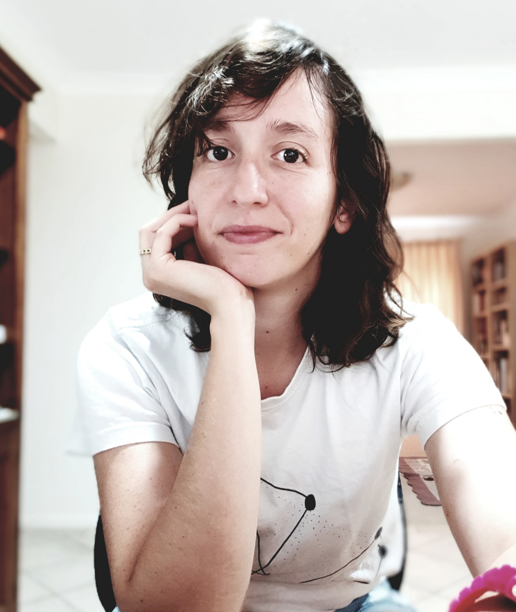

|  |
Isabel CeronPhD Candidate, Urban Planning I am a PhD Candidate at the University of Queensland. My research focuses on research agendas in the Urban Planning field, particularly on what consideration is given to environmental sustainability. Email: ceron.ceron@gmail.com |